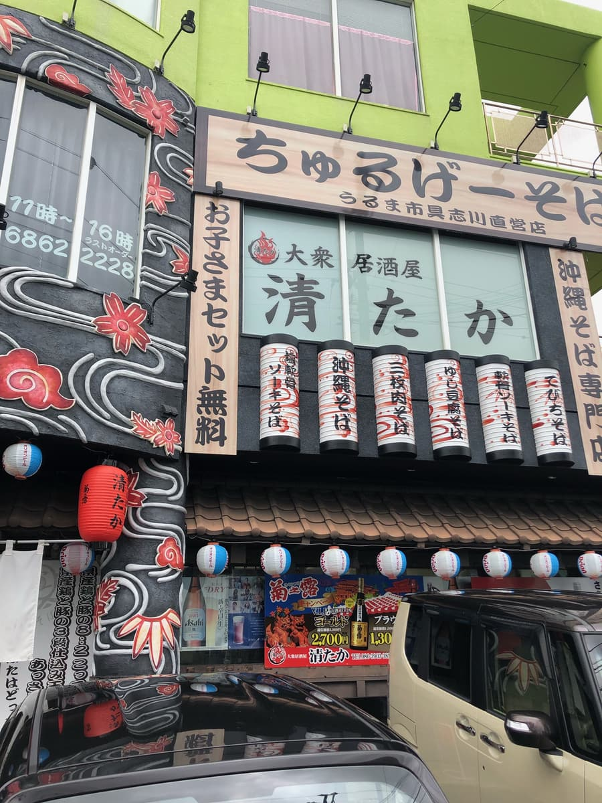
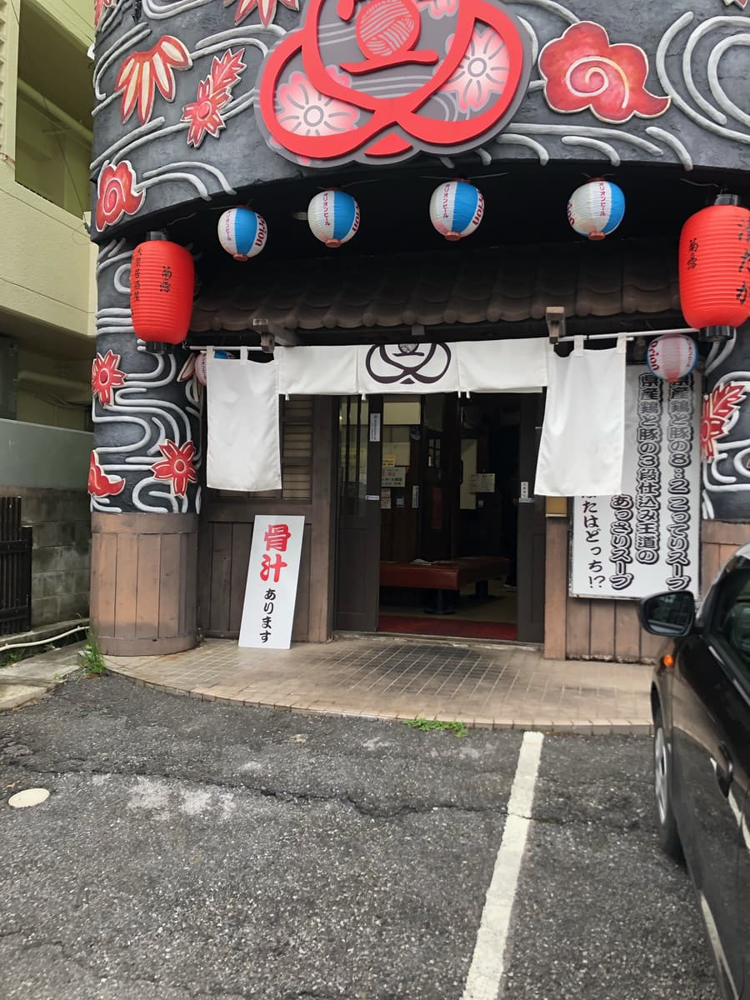
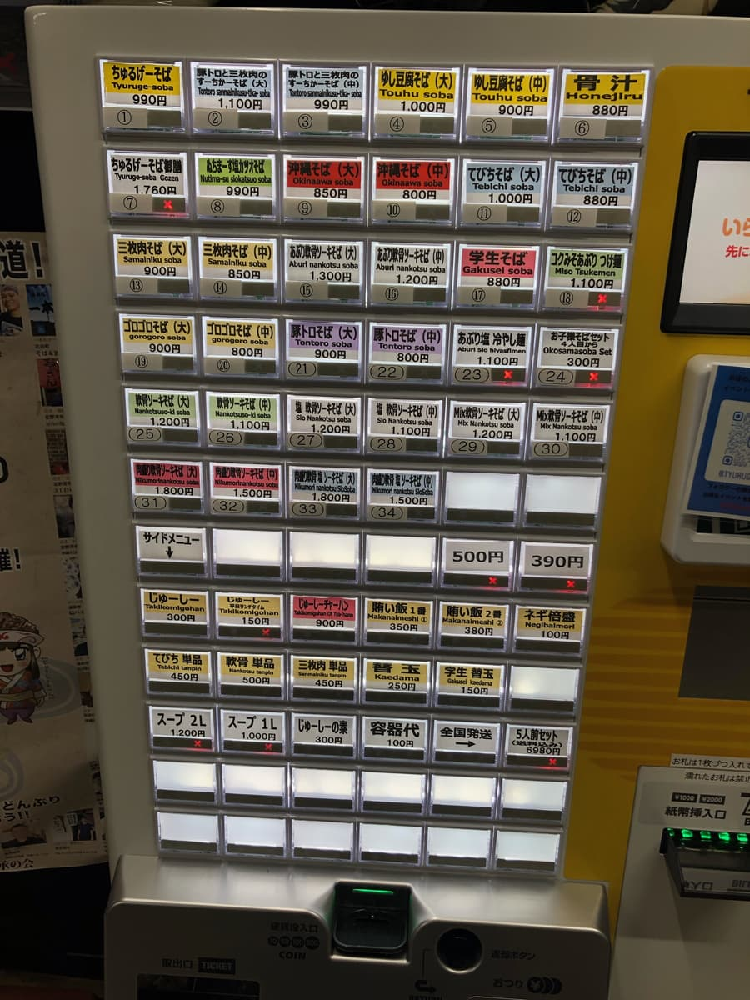
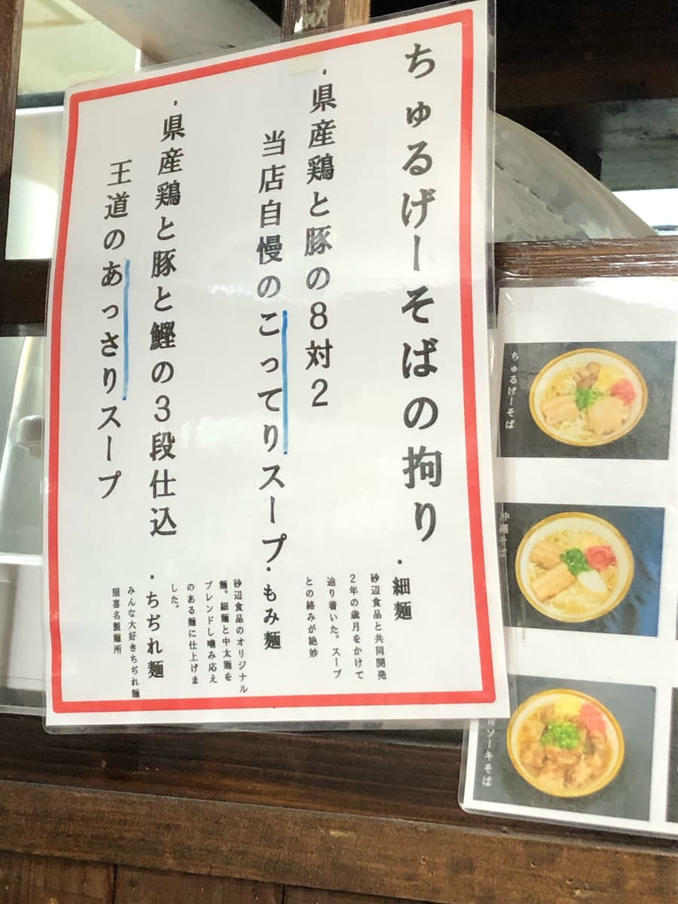
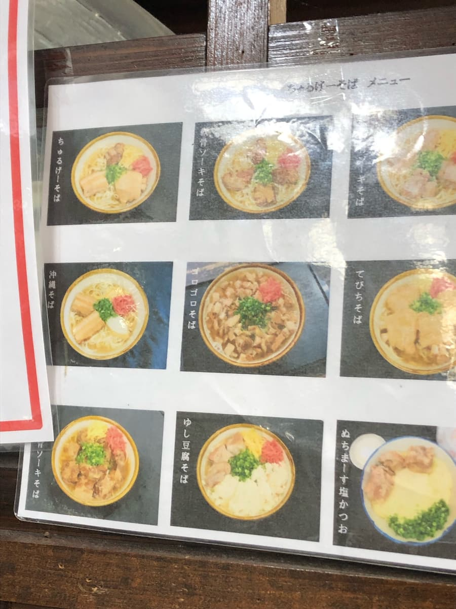
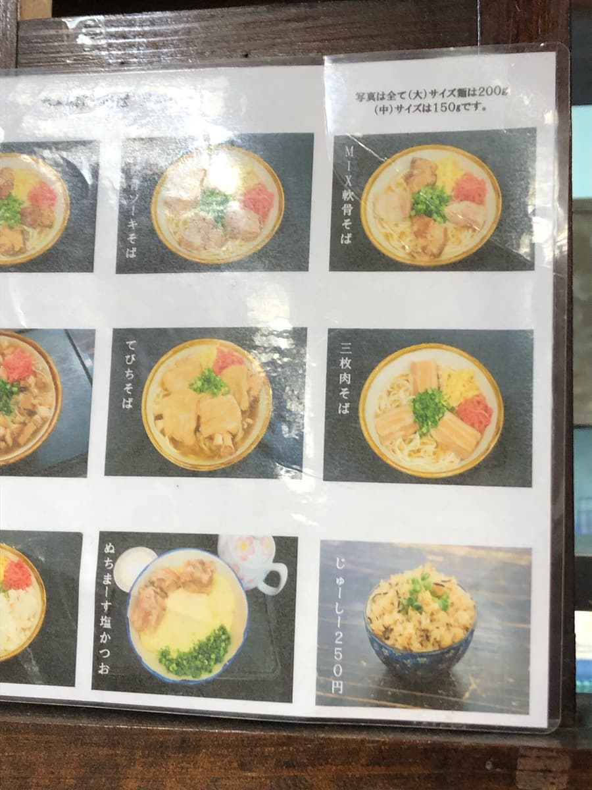
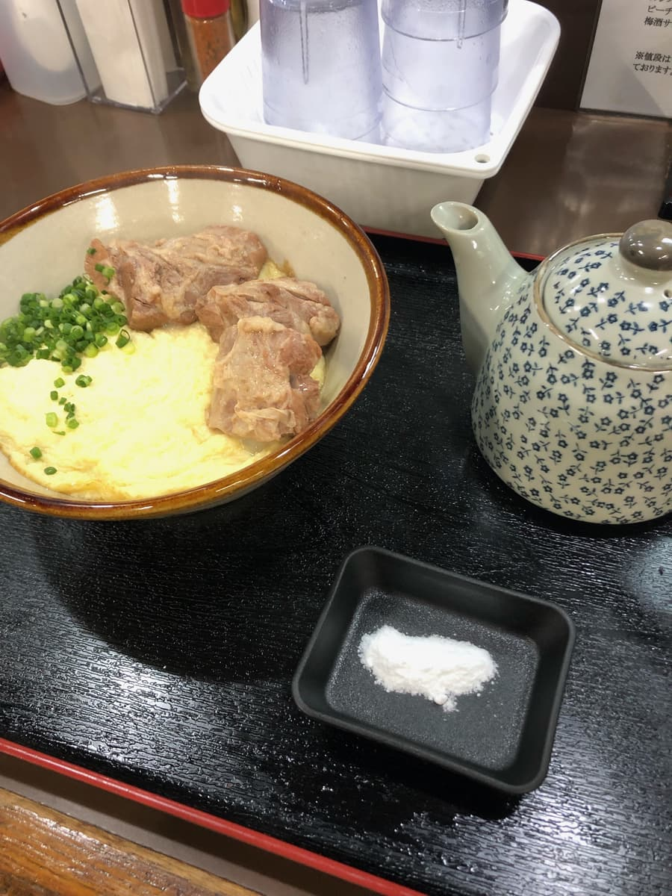
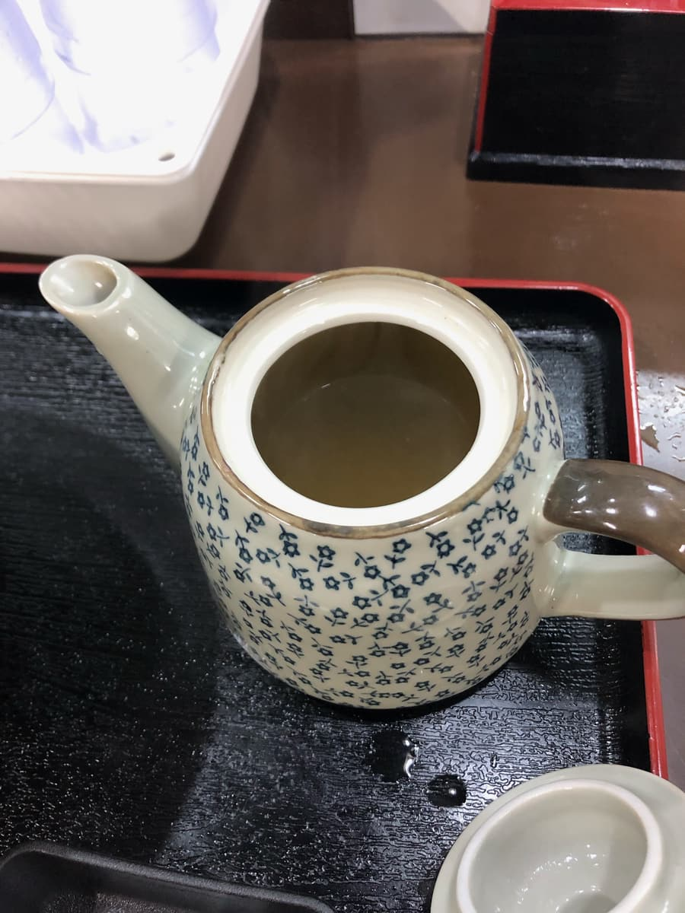
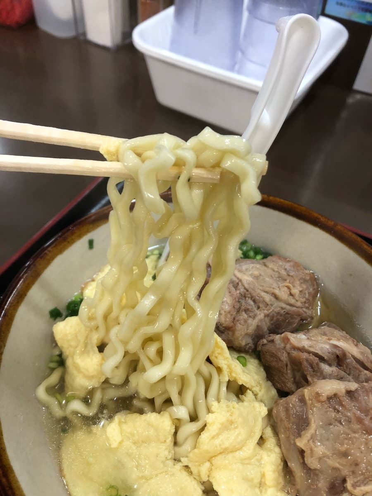

2023年11月吃的。这家店是「第13届冲绳面集章活动（2023.10.1～2024.2.29）」的参加店家，是我去的第19家/共34家😊


走进店里，入口附近有售票机。这里的售票机好像也是只收现金(;^ω^) 真希望所有冲绳面店都能赶快支援无现金支付。
这次目标是集章活动手册上介绍的「命盐盐柴鱼面」😊


「咦？」这个「浓厚」和「清爽」的说明好眼熟哈哈 和前几天吃的「宜野湾面」一样。

「啾鲁给面」的说明（清爽）写着「鸡、猪和柴鱼」，可以知道是柴鱼基底。前几天的「宜野湾面」明明写着「３段熬制」，却只写了「鸡和猪」，这是漏掉了「柴鱼」两个字吧(;^ω^) 因为味道确实也有柴鱼基底的风味ｗｗ
面的说明也是「啾鲁给面」的更详细更仔细呢哈哈
不过，这次点的「命盐盐柴鱼面」，店员既没问面的种类也没问汤头的种类。商品名称里有「柴鱼」，所以汤头应该是清爽高汤。


等「命盐盐柴鱼面」上桌的时候，看了店内的菜单照片，发现有前几天在「宜野湾面」吃过的「大块料面」这个商品名称。
汤头、面种类的说明也一样，仔细一看，店员统一T恤的背后还印着「冲绳面专卖店 宜野湾面、啾鲁给面」的字样。
吃完后问了店员，果然和「宜野湾面」是类似姊妹店的关系😊 商品也和「宜野湾面」几乎一样，不同的是啾鲁给面在宇流麻市有豆腐店，所以「冲绳嫩豆腐面」好像是和「宜野湾面」不同的地方。

「命盐盐柴鱼面」来了😁 碗里竟然是没有汤的状态。看来高汤是装在茶壶里。
不是名护市八重食堂的水壶，而是茶壶版本呢😊
店员问我「是第一次来吗？」，然后为我说明了吃法。
宇流麻市特产的「命盐」味道温和，全部加进去也没问题。不过一开始先加一半左右，再依喜好调整。店员这样说明，所以我就照着吃了。


照店员的说明，加了一半命盐后先喝一口汤。果然是柴鱼基底的清爽系汤头，我直接尝了一点点命盐，就是普通的咸(;^ω^) 但溶进高汤里之后，就变成清爽温和的味道，普通好吃。觉得再咸一点也没问题，就把剩下一半的命盐也加进去了。
汤头水准算高呢，接着吃藏在煎蛋下面的面。这是卷面。「命盐盐柴鱼面」好像固定是卷面。这也和前几天在「宜野湾面」吃的卷面一样呢。
软骨排骨很大块，竟然放了３块。份量很足很不错，调味温和、口感软嫩，普通好吃。
评分（9.5分/15分）：普通好吃。我觉得汤头水准很高。这里好像也是受到在地人喜爱的店，店门前的停车场大概能停几台车，但很快就会停满。这家店也要不要来吃一次看看呢？
面：★★★☆☆（3）
汤头：★★★✬☆（3.5）
配料：★★★☆☆（3）